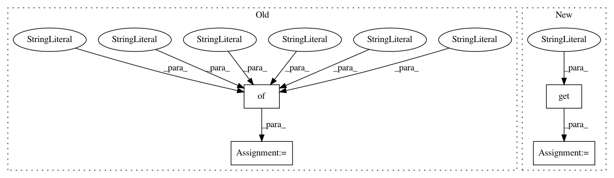

67f6d47d9e61f28d455319c868c38fbc11e73366,flow/scenarios/bridge_toll/gen.py,BBTollGenerator,specify_connections,#BBTollGenerator#Any#,39
Before Change
// {"from": "4", "to": "5", "fromLane": "6", "toLane": "3"},
// {"from": "4", "to": "5", "fromLane": "7", "toLane": "4"}]
// return conn
conn = [{"from": "3", "to": "4", "fromLane": "0", "toLane": "0"},
{"from": "3", "to": "4", "fromLane": "1", "toLane": "0"},
{"from": "3", "to": "4", "fromLane": "2", "toLane": "1"},
{"from": "3", "to": "4", "fromLane": "3", "toLane": "1"},
{"from": "4", "to": "5", "fromLane": "0", "toLane": "0"},
{"from": "4", "to": "5", "fromLane": "1", "toLane": "0"},]
return conn
def specify_routes(self, net_params):
After Change
See parent class
scaling = net_params.additional_params.get("scaling", 1)
conn = []
{"from": "3", "to": "4", "fromLane": "0", "toLane": "0"},
{"from": "3", "to": "4", "fromLane": "1", "toLane": "0"},
{"from": "3", "to": "4", "fromLane": "2", "toLane": "1"},
{"from": "3", "to": "4", "fromLane": "3", "toLane": "1"},
for i in range(4*scaling):
conn += [{"from": "3", "to": "4", "fromLane": str(i), "toLane": str(int(np.floor(i/2)))}]
for i in range(2*scaling):
conn += [{"from": "4", "to": "5", "fromLane": str(i), "toLane": str(int(np.floor(i/2)))}]
// conn = [{"from": "3", "to": "4", "fromLane": "0", "toLane": "0"},
In pattern: SUPERPATTERN
Frequency: 4
Non-data size: 4
Instances
Project Name: flow-project/flow
Commit Name: 67f6d47d9e61f28d455319c868c38fbc11e73366
Time: 2018-02-22
Author: eugenevinitsky@wirelessprvnat-172-16-134-167.near.illinois.edu
File Name: flow/scenarios/bridge_toll/gen.py
Class Name: BBTollGenerator
Method Name: specify_connections
Project Name: tensorflow/datasets
Commit Name: 52ba3c53fdeb5806b3626b873eefabf8c065d9d4
Time: 2019-05-21
Author: adarob@google.com
File Name: tensorflow_datasets/text/squad.py
Class Name: Squad
Method Name: _generate_examples
Project Name: home-assistant/home-assistant
Commit Name: bc0eb9bf32f6493847e291e2506f99e0a0d2ce24
Time: 2021-03-19
Author: dk891@gmx.de
File Name: tests/components/uvc/test_camera.py
Class Name: TestUVCSetup
Method Name: test_setup_full_config
Project Name: RasaHQ/rasa
Commit Name: 9cf28ac9daaa46ef66d6efffac5da1ec84d502dc
Time: 2020-10-28
Author: t.wochinger@rasa.com
File Name: rasa/nlu/emulators/wit.py
Class Name: WitEmulator
Method Name: normalise_response_json